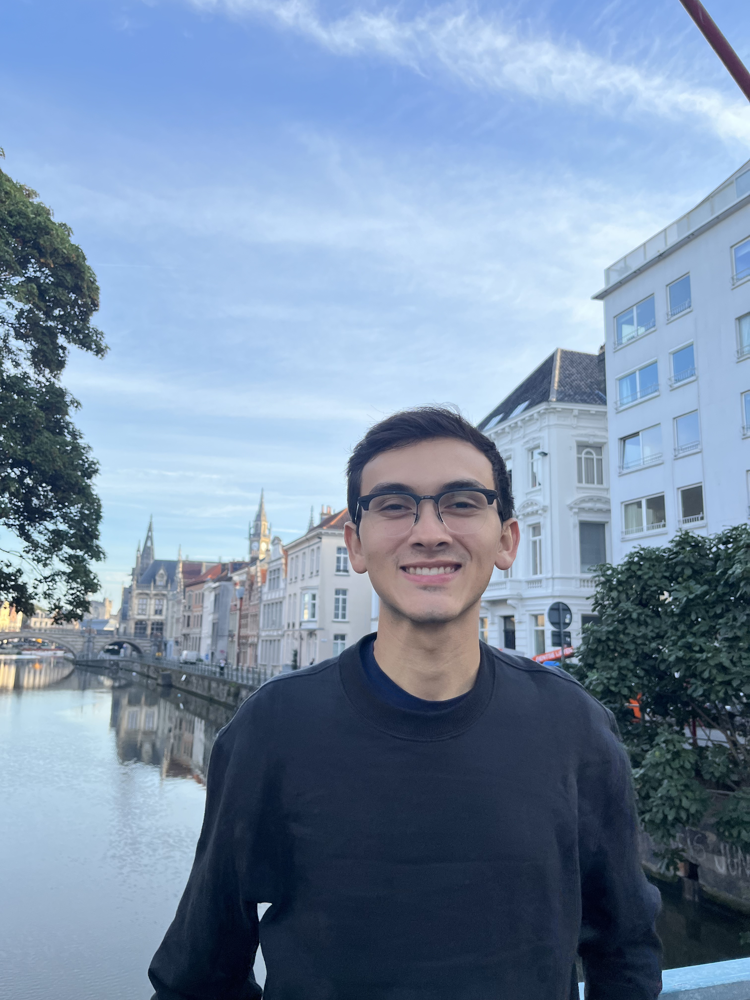

Domain adaptation for autonomous trucks
Adapting car-driving trajectories to truck dynamics, balancing driving scenarios, and fine-tuning a diffusion-based motion planner.
I am a Master's student in Mathematics in Science and Engineering at the Technical University of Munich, working at the intersection of computer vision, machine learning, and control for autonomous systems. I currently work on applied computer vision research at Fraunhofer IKS and am preparing to start my Master's thesis on multimodal 3D perception for ADAS at TRATON, in collaboration with the TUM Chair of Computer Vision & Artificial Intelligence.

My background combines mathematical modeling and optimization with hands-on work in computer vision and motion planning for autonomous driving and robotics applications. I am especially interested in methods that connect what an autonomous system perceives with how it predicts, plans, and acts.
Adapting car-driving trajectories to truck dynamics, balancing driving scenarios, and fine-tuning a diffusion-based motion planner.

Integrating neural signed-distance-field approximations into a nonlinear optimal-control pipeline for collision avoidance.
Exploring pretrained vision foundation models and 3D Gaussian splatting to reconstruct driving scenes from image data.

DepthAlignNet jointly refines monocular depth and estimates camera geometry to improve consistency across views.
My earlier work spans functional analysis, thermo-fluid systems, experimental microfluidics, and a peer-reviewed ASME publication on gas-turbine performance in tropical climates.
Explore other projects and publication →